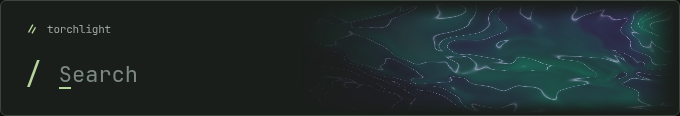
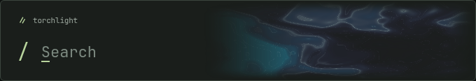
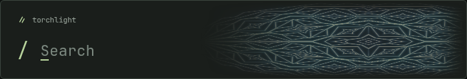

torchlight / spectral studies
01—03
01 / spectral silk
iridescent filaments · recommended

02 / ion cloud
soft vapor · organic depth

03 / prism fold
crystalline facets · sharp light

open the animated preview ↗